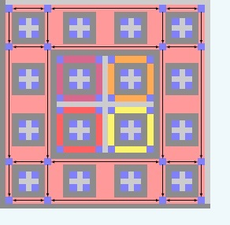

Silvère Gangloff

Silvère Gangloff
2019-. Post-doctoral researcher at University of Wisconsin-Madison, Center for sleep and consciousness,
with Prof. G. Tononi.
2018-2019. Post-doctoral researcher at LIP, ENS Lyon,
working with
Nathalie Aubrun and
Michael Rao in the ANR project CoCoGro.
2015-2018. Ph.D. in Mathematics and Theoretical computer
science: Algorithmic complexity
of growth-type invariants of multidimensional SFT under
dynamical constraints, under supervision of
Mathieu Sablik.
2011-2015. ENS Paris: Studies in mathematics,
biology, and history ; Master of mathematics;
Agrégation de mathématiques.
More details:
Curiculum vitae.
Mail: first.last@gmx.com
Bibliography:
Here is a thematic bibliography related to my research and interests. It is helpful to find back some articles.
Algorithmic computation of entropy of multidimensional subshifts of finite type:
- Characterization of possible values:
A characterization of the entropies of multidimensional subshifts of finite type, M. Hochman, T. Meyerovitch.
This text exposes a characterization of the possibles values of topological entropy for multidimensional
subshifts. This characterization is expressed as a computability condition. On the contrary of unidimensional
subshifts of finite type, the dynamics of multidimensional ones are thus intertwined with computability theory.
The construction method is an adaptation of a method developped by R. Berger, and
simplified by R. Robinson, in order to prove undecidability of
non-emptiness of Wang tilings sets.
- Simulation theorem:
Simulation of effective subshifts by two-dimensional subshifts of finite type, N. Aubrun, M. Sablik.
A characterization of projective subdynamics of multidimensional sofic subshifts as effective
unidimensional ones. This construction relies on the implementation of Turing machines in structures
defined through some anisotropic substitution. A particular consequence is of this theorem
is the characterization of possible values of entropy.
- Some assembling restriction:
Entropies realizable by block gluing Z^d shifts of finite type, R. Pavlov, M. Schraudner.
Here is considered a restriction on multidimensional SFT, namely block gluing, that consists in the possibility to
assemble two blocks, with free choice of relative positions and provided that the distance
is greater than a fixed minimal distance, in at least a configuration of the subshift. This
restriction is proved to strenghten the computability of entropy of bidimensional SFT, and a partial realization is
built that relies on the concept of accelerated Turing machines. Their acceleration relies
on that some operations can be executed in one step using lateral local rules. It is still open
to characterize the values of entropy for multidimensional SFT. Moreover, it is not known if block gluing
restricts the computability of tridimensional SFT.
- Symmetry restriction:
On the entropy of Z^d subshifts of finite type, S. Friedland.
In this text, a symmetry condition on the local rules defining a multidimensional SFT is proved
to strenghen the computability of entropy. This condition covers square ice and dimer model,
and can be seen as a particular case of a form of block gluing.
Fixed-point tilings:
- Historical source:
Reliable Cellular Automata with Self-Organization P. Gacs.
- General frame:
Fixed-point tilings and their applications, B. Durand, A. Romaschchenko, A. Shen.
The fixed-point paradigm defines a method for the implementation of machines in
multidimensional SFT. Basically, the idea is that at each scale, a machine works in order to
build macro-symbols that code for the machine at scale immediately above, while doing
proper computations. I believe that this construction can be translated into zero-scale constructions
(which rely on the Robinson tiling). The machine computations have more impact than
in zero-scale constructions, in which some processes rely on geometry. Although they are more involved,
their description is more compact.
- Minimality restriction: On the expressive power of quasiperiodic SFT,
The expressiveness of quasiperiodic and minimal shifts of finite type,
B. Durand, A. Romashchenko.
These articles shows how the fixed-point constructions can be adapted to some dynamical constraints.
Exact computation of multidimensional SFT entropy in statistical physics:
The following texts are related to a current project to understand and extend
some methods developped in statistical mechanics in order to compute exactly the topological entropy
of some simple multidimensional SFT (called lattice models in this field).
- On the entropy of square ice:
Residual entropy of square ice, E.H. Lieb.
- Existence of solution of Bethe equations:
One-Dimensional Chain of Anisotropic Spin-Spin Interactions. I.
Proof of Bethe's Hypothesis for Ground State in a Finite System, C.N. Yang, C.P. Yang.
- Asymptotic consideration on Bethe roots and ground state:
One-Dimensional Chain of Anisotropic Spin-Spin Interactions. II.
Properties of the Ground-State Energy Per Lattice Site for an Infinite System, C.N. Yang, C.P. Yang.
- Diagonalisation of the XY model:
Two soluble models of an antiferromagnetic chain, E.H. Lieb, T. Schultz and D. Mattis.
- Exposition of the coordinate Bethe ansatz:
The Bethe ansatz for the six-vertex and XXZ models: an exposition,
H. Duminil-Copin, M. Gagnebin, M. Harel, I. Manolescu, V. Tassion.
- Rigorous computation of partition function for the anti-ferroelectric phase:
Discontinuity of the phase transition for the planar random-cluster and Potts models with q>4,
H. Duminil-Copin, M. Gagnebin, M. Harel, I. Manolescu, V. Tassion.
- On solvable lattice models:
Exactly solved models in statistical mechanics , R.J. Baxter.
- Dimers:
The statistics of dimers on a lattice. I. The number of dimers arrangements on a quadratic lattice, P.W.Kasteleyn.
- Alternating signs matrices: -
Another proof of the alternating signs matrices conjecture, G. Kuperberg.
-
Symmetry classes of alternating-sign matrices under one roof, G. Kuperberg.
- Hamiltonians spectra:
Undecidability of the spectral gap, J. Bausch, T.S. Cubitt, A. Lucia, D. Perez-Garcia.
- Diagonal dimers through Yang-Baxter:
Yang-Baxter Solution of Dimers as a Free-Fermion Six-Vertex Models, P.A. Pearce, A. Vittorini-Orgeas.
-Open problems:
Some open problems in exactly solvable models, V.E.Korepin, O.I.Patu.
Symbolic systems and biology
- Artificial life: Open problems
in artificial life, M.A. Bedau, J.S. McCaskill, N.H. Packard, S. Rasmussen, C. Adami, D.G. Green, T. Ikegami, K. Kaneko, T.S. Ray.
- Quantification of organisedness: A measure for braincomplexity : Relating functional segregation and integration in the nervous system,
G.Tononi, O. Sporns, A. Edelman.
- Intricacy: Dynamical intricacy and average sample complexity, K. Petersen and B. Wilson.
- Relation of the problem of consciousness and physics: Consciousness as a state of matter, M.Tegmark.
- On the hierarchies and consciousness: Consciousness and hierarchical inference, K. Friston.
- Integrated information: Computing integrated information, S. Krohrn and D. Otswald.
- Turing machine and the Global workspace theory: The human Turing machine: a neural framework for mental programs, A. Zylberberg, S. Dehaene, P.R. Roelfsema and M. Sigman.
Some books
-Combinatorics, Words and Symbolic dynamics, V. Berthé, M. Rigo
- Computable analysis, K. Weihrauch
- Society of mind, M. Minsky.
- A cognitive theory of
Consciousness, B.J. Baars
- Le degré zéro de l'écriture, R. Barthes
- Lettre sur l'humanisme, M. Heidegger
- Handbook of embodied cognition, L. Shapiro.